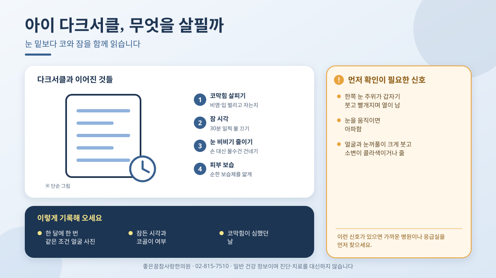

이종호 한의사 감수좋은꿈참사랑한의원 대표원장 (한의사 면허번호 19769)발행 2026-11-26 · 수정 2026-11-26
이 글의 차례
아침에 어린이집 가방을 메워 주다가 아이 얼굴을 가만히 들여다봅니다. 눈 밑이 거뭇하고 푸르스름합니다. 어젯밤 일찍 재웠는데도 그렇습니다. 할머니는 "애가 어디 아픈 거 아니냐"고 하시고, 다른 엄마는 "우리 애도 그래요, 비염 때문이래요"라고 합니다. 어떤 말을 믿어야 할지 모르겠습니다.
다크서클은 그 자체로 아이를 아프게 하지는 않지만, 부모님의 눈에는 계속 밟히는 모습입니다. 얼굴이 피곤해 보이니 혹시 잠이 모자라나, 영양이 부족한가, 어디 큰 병이 숨어 있는 건 아닌가 하는 걱정이 꼬리를 뭅니다. 진료실에서도 다른 이유로 왔다가 "그런데 원장님, 이 눈 밑은 왜 이럴까요" 하고 조심스럽게 여쭈시는 분이 많습니다.
아이 다크서클은 대개 한 가지 이유보다 여러 이유가 겹쳐 나타납니다. 코막힘으로 눈 주변의 피가 잘 빠져나가지 못하는 경우, 알레르기로 눈을 자주 비비는 경우, 잠이 얕거나 짧은 경우, 타고난 피부가 얇아 혈관이 비쳐 보이는 경우가 대표적입니다.
그래서 저는 다크서클을 아이 몸이 보내는 작은 쪽지처럼 봅니다. 그 쪽지를 펼쳐 보면 코와 잠, 피부, 생활 리듬에 관한 이야기가 적혀 있는 경우가 많습니다. 눈 밑만 보기보다 그 뒤의 이야기를 함께 읽어 보려는 것이 이 글의 목적입니다.
다크서클은 어떤 모습들이 있나요
다크서클이라고 다 같은 색이 아닙니다. 푸르스름하거나 보랏빛이 도는 다크서클은 눈 밑 얇은 피부 아래의 정맥이 비쳐 보이는 경우가 많습니다. 코가 막혀 눈 주변 정맥에 피가 고이면 이 색이 더 짙어집니다. 아침에 짙었다가 낮에 조금 옅어지는 모습을 보이기도 합니다.
갈색빛이 도는 다크서클은 눈 밑 피부에 색소가 쌓여 생기는 경우가 많습니다. 아토피나 알레르기로 눈 주변을 자주 비비고 긁는 아이에게서 흔히 보입니다. 피부가 오래 자극을 받으면 그 자리가 조금씩 어둡게 변하기 때문입니다.
눈 밑이 움푹 꺼져 그림자가 지는 경우도 있습니다. 이는 얼굴 생김새나 타고난 뼈 구조와 관련된 경우가 많아 조명에 따라 더 짙어 보입니다. 이런 모습은 가족 가운데 비슷한 분이 계신 경우가 흔하고, 아이가 크면서 얼굴형이 달라지며 덜 눈에 띄기도 합니다.
왜 아이에게 다크서클이 생길까요
아이 다크서클과 가깝게 이어진 이유들은 대략 이렇습니다. 한 아이에게 두세 가지가 함께 있는 경우가 많습니다.
- 알레르기 비염이나 잦은 감기로 코가 자주 막히는 경우
- 코막힘 때문에 입을 벌리고 자거나 코를 고는 경우
- 눈이 가려워 손등으로 자주 비비는 경우
- 아토피로 눈 주변 피부가 건조하고 자주 긁는 경우
- 잠드는 시각이 늦거나, 자다가 자주 깨서 잠이 얕은 경우
- 타고난 피부가 얇고 하얘 혈관이 잘 비치는 경우
이 가운데 코막힘은 특히 자주 만나는 이유입니다. 코와 눈 주변의 정맥은 서로 이어져 있어서, 코 점막이 부어 있으면 눈 밑의 피가 잘 빠져나가지 못하고 고이게 됩니다. 알레르기가 있는 아이의 다크서클을 따로 부르는 이름이 있을 만큼 흔한 모습입니다.
드물지만 철분이 부족한 빈혈이 있을 때 얼굴이 전체적으로 창백해지면서 눈 밑이 더 어두워 보이기도 합니다. 입맛이 없고 쉽게 지치며 입술과 손톱이 창백하다면 소아청소년과에서 혈액 검사로 확인해 보시는 것이 좋습니다.
다크서클이 있으면 피곤하다는 뜻인가요
부모님이 가장 걱정하시는 부분입니다. 다크서클이 있다고 해서 아이가 늘 지쳐 있다는 뜻은 아닙니다. 타고난 피부 때문이라면 잘 자고 잘 노는 아이에게도 다크서클은 그대로 보입니다. 다크서클 하나만으로 아이의 기운을 판단하지 않으셔도 괜찮습니다.
다만 다크서클과 함께 아침에 잘 못 일어나고, 낮에 자주 하품하며, 오후에 짜증이 늘어난다면 잠의 양이나 질을 함께 살펴볼 필요가 있습니다. 코가 막혀 입으로 숨 쉬며 자는 아이는 오래 누워 있어도 깊게 자지 못하는 경우가 많기 때문입니다.
거꾸로 말하면, 다크서클이 짙어지는 시기와 아이의 컨디션이 함께 흔들린다면 그 시기에 무엇이 달랐는지를 살펴보는 것이 실마리가 됩니다. 환절기, 감기 뒤, 새 학기처럼 코와 잠이 흔들리기 쉬운 때와 겹치는 경우가 많습니다.
다크서클과 헷갈리기 쉬운 모습은 무엇인가요
아침에 눈두덩이와 눈 밑이 부어 보이는 것은 다크서클과는 조금 다릅니다. 짜게 먹은 다음 날, 울다 잔 다음 날, 엎드려 잔 다음 날에 흔히 붓고 낮이 되면 가라앉습니다. 다만 부기가 며칠씩 빠지지 않고 다리나 배까지 붓는다면 소아청소년과에서 확인해 보시는 것이 좋습니다.
눈 밑에 갑자기 멍처럼 보이는 자국이 생겼다면 부딪힌 일이 있었는지 먼저 떠올려 보세요. 부딪힌 기억이 없는데 멍이 여기저기 자주 생기거나, 코피와 잇몸 출혈이 함께 잦다면 이 역시 소아청소년과에서 확인을 받으시길 권합니다.
한쪽 눈 밑만 유난히 어둡거나 붓는다면 그쪽 코가 더 자주 막히는지, 그쪽으로 누워 자는 버릇이 있는지 살펴봐 주세요. 의외로 생활 습관에서 이유를 찾는 경우가 꽤 있습니다.
코와 잠을 살피면 다크서클도 함께 보입니다
다크서클이 있는 아이를 진료할 때 저는 눈보다 코와 잠을 먼저 봅니다. 잠잘 때 입을 벌리고 있는지, 코를 고는지, 자다가 자주 뒤척이는지, 아침에 일어나 코를 훌쩍이거나 재채기를 연달아 하는지를 여쭙습니다.
알레르기 비염이 있는 아이라면 집 안 먼지와 진드기, 반려동물, 꽃가루처럼 코를 자극하는 것을 줄이는 일이 다크서클과도 이어집니다. 침구를 자주 빨고 햇볕에 말리며, 아이 방에 천 인형이나 두꺼운 카펫을 줄이는 것부터 해 볼 수 있습니다. 비염 치료는 이비인후과나 소아청소년과의 처방을 그대로 이어 가시면서 생활을 함께 살피시면 됩니다.
잠은 길이뿐 아니라 시각도 중요합니다. 늦게 자고 늦게 일어나는 아이는 같은 시간을 자도 아침 얼굴이 더 부어 보이고 다크서클이 짙어 보이는 경우가 많습니다. 잠드는 시각을 30분만 앞당겨도 아침 얼굴이 달라지는 아이들이 있습니다.
계절과 생활에 따라 짙어지는 때가 있나요
다크서클은 일 년 내내 같은 색으로 머무르기보다 계절과 생활에 따라 짙어졌다 옅어졌다를 되풀이하는 경우가 많습니다. 봄과 가을 환절기에는 꽃가루와 큰 일교차로 코가 자주 막혀 짙어지고, 겨울에는 난방으로 실내가 건조해져 코 점막이 붓기 쉬워 다시 짙어지기도 합니다.
생활에서는 방학이 대표적입니다. 방학이 되면 잠드는 시각이 늦어지고 화면을 보는 시간이 늘어나면서 아침 얼굴이 부석부석해지는 아이가 많습니다. 개학을 앞두고 리듬을 되돌리면 다크서클도 함께 옅어지는 모습을 보이기도 합니다.
이런 흐름을 알고 계시면 다크서클이 갑자기 짙어진 날 덜 놀라실 수 있습니다. 짙어진 시기에 코와 잠, 생활에 무엇이 달라졌는지를 함께 떠올려 보시는 것만으로도 다음 계절을 준비하는 데 보탬이 됩니다.
먹는 것과 다크서클은 관련이 있나요
어떤 음식 하나를 먹는다고 다크서클이 사라지지는 않습니다. 다만 고루 먹지 못해 철분이나 단백질이 부족한 아이는 얼굴빛이 전체적으로 창백해져 눈 밑이 더 어두워 보일 수 있습니다. 입이 짧은 아이라면 고기, 생선, 달걀, 콩처럼 단백질과 철분이 든 음식을 하루 한 번은 식탁에 올려 주세요.
저녁 늦게 짜고 단 간식을 먹고 자면 다음 날 아침 얼굴이 붓고 눈 밑이 더 짙어 보이기 쉽습니다. 우유나 특정 음식을 먹은 뒤 코가 더 막히는 것 같다면 기록해 두셨다가 진료 때 알려 주세요. 다만 혼자 판단해 여러 음식을 한꺼번에 끊는 것은 아이 성장에 좋지 않으니 권하지 않습니다.
아이가 스스로 신경 쓸 때는 어떻게 하나요
조금 큰 아이들은 친구에게서 "너 눈 밑이 왜 그래?"라는 말을 듣고 신경 쓰기 시작합니다. 거울을 자주 들여다보거나 사진 찍기를 싫어하기도 합니다. 이럴 때는 다크서클이 아픈 것이 아니라 코와 잠, 피부 결과 관련된 모습이라는 것을 아이 눈높이에 맞춰 설명해 주세요.
그리고 아이가 직접 할 수 있는 일 하나를 함께 정하면 좋습니다. 일찍 자기, 눈 비비지 않기, 코 막히면 말하기처럼 작고 분명한 약속이면 충분합니다. 스스로 할 수 있는 일이 생기면 아이는 걱정보다 실천 쪽에 마음을 쓰게 됩니다.
먼저 이렇게 여쭙니다
처음 오시면 대략 이런 순서로 여쭙니다.
- 다크서클은 언제부터 보였고, 계절이나 감기에 따라 달라지나요?
- 코막힘, 재채기, 맑은 콧물이 자주 있나요?
- 잘 때 입을 벌리거나 코를 골고, 자주 뒤척이나요?
- 눈을 자주 비비거나 눈 주변을 긁나요?
- 잠드는 시각과 일어나는 시각은 몇 시쯤인가요?
- 가족 가운데 비슷한 눈 밑을 가진 분이 있나요?
입맛과 식사량, 낮의 기운, 대변도 함께 여쭙습니다. 다크서클이 아이 몸 전체의 흐름과 어떻게 이어져 있는지를 보기 위해서입니다.
일상에서 먼저 해 볼 수 있는 것
다크서클을 직접 지우는 방법보다, 다크서클을 짙게 만드는 이유를 하나씩 줄여 가는 쪽을 권합니다.
- 잠드는 시각을 일정하게 맞추고, 지금보다 30분 일찍 불 끄기
- 아이 방 침구를 자주 빨고, 방 습도를 너무 건조하지 않게 맞추기
- 자기 전 코가 막혀 있으면 미지근한 수건을 코 위에 잠시 올려 주기
- 눈을 비비려 할 때 손 대신 깨끗한 물수건을 건네는 습관 들이기
- 눈 주변이 건조하면 순한 보습제를 얇게 발라 주기
- 짜고 단 간식을 저녁 늦게 먹지 않기
눈 밑에 차가운 숟가락이나 얼음을 대는 방법을 들으셨을 수도 있는데, 아이 피부에는 자극이 될 수 있어 권하지 않습니다. 어른용 아이 크림이나 미백 제품도 아이 피부에는 맞지 않는 경우가 많으니 쓰지 않으시는 편이 좋습니다.
한의원에서 함께 살필 수 있는 경우
- 다크서클과 함께 코막힘과 재채기가 잦은 경우
- 입을 벌리고 자거나 코를 골아 잠이 얕은 경우
- 쉽게 지치고 입맛이 없으며 얼굴빛이 창백한 경우
- 눈을 자주 비비고 눈 주변 피부가 거칠어진 경우
- 감기를 앓을 때마다 다크서클이 짙어지는 경우
좋은꿈참사랑한의원에서는 먼저 아래 '먼저 확인이 필요한' 신호가 없는지부터 봅니다. 그다음 맥을 짚고 코와 눈 주변, 혀와 배를 살피며 잠과 입맛을 여쭙습니다. 진찰한 내용을 바탕으로 생활에서 바꿔 볼 것 하나와 함께 아이 몸에 맞는 관리를 상의합니다.
한약을 상의할 때는 아이가 먹고 있는 비염약이나 알레르기약, 영양제를 모두 확인하고 신중하게 정합니다. 침을 무서워하는 아이에게 억지로 하지 않고, 코 주변을 손으로 부드럽게 누르는 방법처럼 집에서도 따라 할 수 있는 방법을 함께 알려 드립니다. 비염이나 아토피 치료는 해당 진료과와 나란히 가시면 됩니다.
이렇게 기록해 오시면 상담이 쉬워집니다
다크서클은 사진으로 남겨 두면 변화를 보기가 훨씬 쉽습니다. 일주일에 한 번, 같은 시각과 같은 조명에서 아이 얼굴을 찍어 두세요.
- 일주일에 한 번 같은 조건에서 찍은 얼굴 사진
- 잠든 시각과 깬 시각, 코골이나 입 벌림 여부
- 코막힘과 재채기가 심했던 날
- 눈을 비빈 횟수가 많았던 날과 그날 있었던 일
- 감기나 비염약을 먹은 기간
사진과 기록을 나란히 놓으면, 다크서클이 짙어진 때와 코나 잠이 흔들린 때가 겹치는지 한눈에 보입니다.
눈 밑보다 아이 하루를 먼저 보기
다크서클은 부모님 마음을 쉽게 흔드는 모습이지만, 그것만으로 아이의 건강을 판단하실 필요는 없습니다. 아이가 잘 먹고, 잘 자고, 잘 논다면 눈 밑 색은 크게 걱정하지 않으셔도 되는 경우가 많습니다.
이번 주에는 하나만 해 보세요. 잠드는 시각을 30분 앞당기기. 다음에 오시면 사진과 잠 기록을 함께 펼쳐 놓고, 아이의 코와 잠이 어떻게 흘러가고 있는지부터 이야기 나누겠습니다.
이런 증상은 먼저 확인이 필요합니다
- 한쪽 눈 주위가 갑자기 붓고 빨개지며 열이 나고, 눈을 움직이면 아파하는 경우
- 얼굴과 눈꺼풀이 크게 붓고 소변이 콜라색이거나 양이 눈에 띄게 줄어든 경우
이런 신호가 있으면 한의원보다 가까운 병원이나 응급실을 먼저 찾으세요.
함께 읽으면 좋은 글
- 아이가 아침마다 재채기와 맑은 콧물, 코막힘을 달고 사는 알레르기 비염은 어떻게 살피나요?
- 아이가 자면서 코를 골고 입으로 숨 쉴 때는 어떻게 살피나요?
- 아이가 잠투정이 심하고 자다가 자주 깰 때는 어떤 점을 살펴보나요?
- 아이 피부가 건조하고 밤마다 긁어서 깨는 소아 아토피 피부염은 어떻게 살피나요?
- 아이가 코를 골고 입을 벌리고 자는데 아데노이드가 크다는 말을 들었을 때는 어떻게 살피나요?

여쭙는 것
- 다크서클은 언제부터 보였고, 계절이나 감기에 따라 달라지나요?
- 코막힘, 재채기, 맑은 콧물이 자주 있나요?
- 잘 때 입을 벌리거나 코를 골고, 자주 뒤척이나요?
생활에서 해 볼 것
- 잠드는 시각을 일정하게 맞추고, 지금보다 30분 일찍 불 끄기
- 아이 방 침구를 자주 빨고, 방 습도를 너무 건조하지 않게 맞추기
- 자기 전 코가 막혀 있으면 미지근한 수건을 코 위에 잠시 올려 주기
한의원에서 함께 살필 것
- 다크서클과 함께 코막힘과 재채기가 잦은 경우
- 입을 벌리고 자거나 코를 골아 잠이 얕은 경우
- 쉽게 지치고 입맛이 없으며 얼굴빛이 창백한 경우
먼저 확인이 필요한 신호
- 한쪽 눈 주위가 갑자기 붓고 빨개지며 열이 나고, 눈을 움직이면 아파하는 경우
- 얼굴과 눈꺼풀이 크게 붓고 소변이 콜라색이거나 양이 눈에 띄게 줄어든 경우
한눈에 보는 표
| 구분 | 핵심 |
|---|---|
| 여쭙는 것 | 다크서클은 언제부터 보였고, 계절이나 감기에 따라 달라지나요? 코막힘, 재채기, 맑은 콧물이 자주 있나요? |
| 생활에서 해 볼 것 | 잠드는 시각을 일정하게 맞추고, 지금보다 30분 일찍 불 끄기 아이 방 침구를 자주 빨고, 방 습도를 너무 건조하지 않게 맞추기 |
| 한의원에서 함께 살필 것 | 다크서클과 함께 코막힘과 재채기가 잦은 경우 입을 벌리고 자거나 코를 골아 잠이 얕은 경우 |
| 먼저 확인이 필요한 신호 | 한쪽 눈 주위가 갑자기 붓고 빨개지며 열이 나고, 눈을 움직이면 아파하는 경우 얼굴과 눈꺼풀이 크게 붓고 소변이 콜라색이거나 양이 눈에 띄게 줄어든 경우 |
자주 묻는 질문
다크서클이 있으면 빈혈인가요?
대부분은 코막힘이나 잠, 타고난 피부 때문입니다. 다만 얼굴빛이 창백하고 쉽게 지치며 입맛이 없다면 소아청소년과에서 혈액 검사로 확인해 보시길 권합니다.
아이 다크서클은 크면서 옅어지나요?
코막힘이나 잠 때문이라면 그 부분이 나아지면서 옅어지는 경우가 많습니다. 타고난 피부나 얼굴 구조 때문이라면 크게 달라지지 않을 수 있습니다.
눈 밑에 크림을 발라 주면 도움이 되나요?
건조하다면 순한 보습제를 얇게 발라 주는 정도를 권합니다. 어른용 아이 크림이나 미백 제품은 아이 피부에 자극이 될 수 있어 쓰지 않으시는 편이 좋습니다.
비염약을 먹고 있는데 한의원 진료를 함께 받아도 되나요?
처방받은 약은 그대로 이어 가시면서 함께 상의하실 수 있습니다. 먹고 있는 약을 알려 주시면 확인하고 신중하게 정합니다.
좋은꿈참사랑한의원은 재진 때 지난번 이야기부터 이어서 여쭙니다. 진료시간과 예약은 오시는 길에서 확인하세요.
어디서 상담받을 수 있나요?
좋은꿈참사랑한의원은 서울 동작구 만양로2길 2 신성빌딩 3층·5층(서울 동작구 상도동, 7호선 상도역 3번 출구 근처)에 있습니다. 한의사 3명(이종호 대표원장, 조영기 수석진료원장, 정원영 진료원장)이 진료합니다. 진료시간은 평일 09:30~20:00(점심 13:00~14:00), 토·일·공휴일 09:30~15:00이며, 방문 전 전화로 확인을 권합니다. 예약은 네이버 예약, 카카오톡 상담, 전화 02-815-7510로 받습니다.
이 글은 일반적인 건강 정보이며 개인의 진단이나 치료를 대신하지 않습니다. 증상이 있거나 복용 중인 약이 있다면 진료를 통해 확인하세요. 치료 효과는 개인마다 다를 수 있습니다.
작성 기준: 일반적으로 알려져 있는 건강 정보를 참고해 정리했습니다(대표원장 감수). 증상 기록은 1~2주 동안 하루 1회, 비슷한 시간에 적어 오시면 지난 상태와 비교하기 쉽습니다.